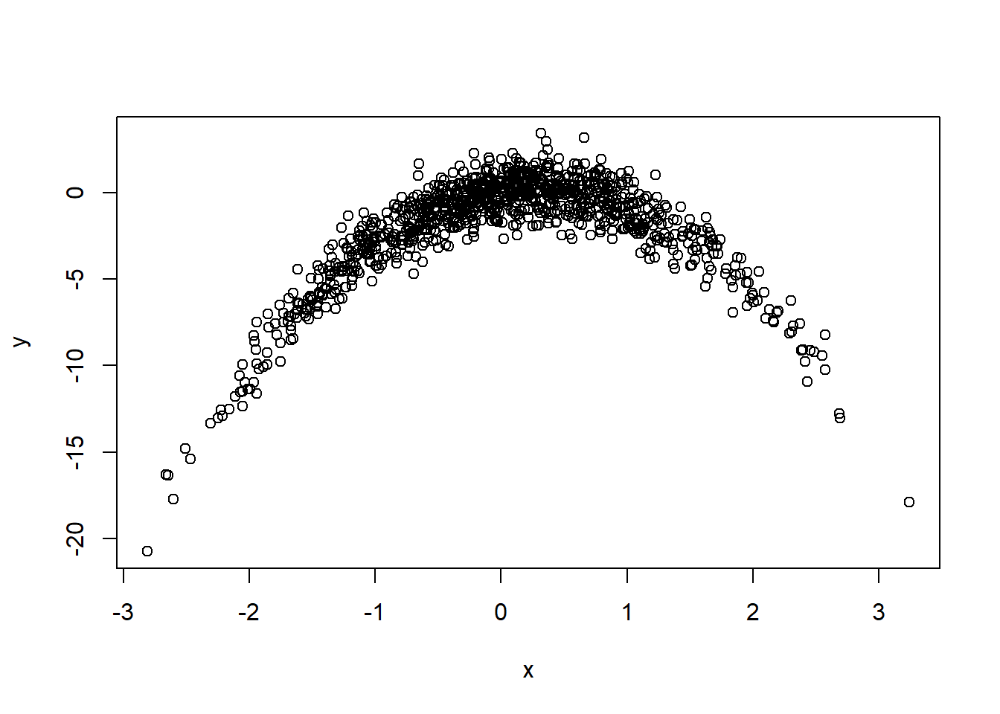

set.seed(123)Question 1 ————————————————————–
x = rnorm(1000)
y = x - 2*(x^2) + rnorm(1000)
# modele avec n = 1000 et p = 2. beta = t(1, -2 )Nous allons généré un modèle de régression linéaire classique : \[Y = X\beta + \mathcal{E}\] - \(Y \in \mathbb{R}^{n}\) la variable réponse ou variable à expliquer
\(X \in \mathbb{R}^{n\times p}\) la matrice contenant nos variables explicatives
\(\beta \in \mathbb{R}^{n}\) le vecteur composée des coefficients de régression
\(\mathcal{E} \in \mathbb{R}^{n}\) le vecteur d’erreur suivant une loi \(\mathcal{N}(0, 1)\)
Pour la génération de nos données, nous allons alors poser que \(\beta = (1, 2)'\) et \(X = [x_1, x_1^2]\), \(x_1 \in \mathbb{R}^n\) suivant une loi \(\mathcal{N}(0,1)\).
Question 2 ————————————————————–
plot(x,y)
cor(x,y)[1] 0.2908668# correlation faible, pourtant le nuage de point montre bien un effet de x sur y Question 3 ————————————————————–
df = as.data.frame(cbind(y, x, x^2, x^3, x^4))
mod1 = lm(y~x, data = df)
mod2 = lm(y~ x + V3, data=df)
mod3 = lm(y~ x + V3 + V4, data=df)
mod4 = lm(y~ x + V3 + V4 + V5, data=df)
summary(mod1)
Call:
lm(formula = y ~ x, data = df)
Residuals:
Min 1Q Median 3Q Max
-18.8594 -0.9890 0.7507 1.8526 5.0428
Coefficients:
Estimate Std. Error t value Pr(>|t|)
(Intercept) -1.92130 0.09229 -20.818 <2e-16 ***
x 0.89410 0.09310 9.604 <2e-16 ***
---
Signif. codes: 0 '***' 0.001 '**' 0.01 '*' 0.05 '.' 0.1 ' ' 1
Residual standard error: 2.918 on 998 degrees of freedom
Multiple R-squared: 0.0846, Adjusted R-squared: 0.08369
F-statistic: 92.24 on 1 and 998 DF, p-value: < 2.2e-16cor(x,y)^2[1] 0.08460352#le r2 du mod1 doit correspondre à la corr^2 : okQuestion 4 ————————————————————–
summary(mod1)$r.squared[1] 0.08460352BIC(mod1)[1] 4998.42AIC(mod1)[1] 4983.697BIC(mod2)[1] 2876.101AIC(mod2)[1] 2856.47BIC(mod3)[1] 2881.088AIC(mod3)[1] 2856.549BIC(mod4)[1] 2885.15AIC(mod4)[1] 2855.704# mod2 est le meilleur modèle
## FAIRE UN TABLEAU POUR LES RESULTATS
# R2, R2aj, Cp, AIC, BIC, coeff, etc...Question 5 ————————————————————–
fmla2 = y~ x + V3
fmla3 = y~ x + V3 + V4
fmla1 = y~ x
fmla4 = y~ x + V3 + V4 + V5
####
# ##### TRASH ####
#
# FMLA = c(fmla1, fmla2, fmla3, fmla4)
#
# LOO_1 = function(y, x, fmla, j){
# y_res = rep(NA, 1000)
# for (i in 1:1000){
#
# df[i] = as.data.frame(cbind(y[-i], x[-i], x[-i]^2, x[-i]^3, x[-i]^4))
# mod = lm(fmla[[j]], data = df[i])
#
#
# df2[i] = as.data.frame(cbind(x[-i], x[-i]^2, x[-i]^3, x[-i]^4))
# yi_hat = predict(mod, df2[i])
# yi = y[i]
# y_res[i] = yi - yi_hat
# }
# loo = mean(y_res^2)
# return(loo)
# }
# LOO_1(y,x,FMLA, 2)
#
#
#
# LOO_2 =function(y, x, fmla, i){
# r = lm(fmla[[i]], data = df)$residuals
# h = hatvalues(lm(fmla[[i]], data = df)) #diag de hatmatrix
# loo = mean((r/(1-h))^2)
# return(loo)
# }
# LOO_2(y,x,FMLA, 1)
# LOO_2(y,x,FMLA, 2)
# LOO_2(y,x,FMLA, 3)
# LOO_2(y,x,FMLA, 4)
#
# #####
# Fonction loo qui utilise en entree le modele (ne fonctionne pas si la formule utilise la fonction poly)
loo=function(mod){
n = nrow(mod$model)
Call = mod$call # mod1$call --> lm(formula = y ~ x, data = df)
erreur=1:n
for(i in 1:n){
Call$data = mod$model[-i, ] # mod1$call$data = df
fit = eval.parent(Call)
pred = predict(fit, mod$model[i,])
erreur[i] = (pred - mod$model[i,1])^2
}
return(mean(erreur))
}
#Fonction loo qui utilise la formule du cours
loo2=function(mod){
mean((residuals(mod)/(1-hatvalues(mod)))^2)
}Question 6 ————————————————————–
loo(mod1)[1] 8.581687loo(mod2)[1] 1.016685loo(mod3)[1] 1.017154loo(mod4)[1] 1.01563loo2(mod1)[1] 8.581687loo2(mod2)[1] 1.016685loo2(mod3)[1] 1.017154loo2(mod4)[1] 1.01563# les resultats coincident
# loo2 est plus rapide pour calculer
# le plus haut loo est pour mod1 et le plus bas pour mod4
# (même si resultats prochent entre mod2, mod3 et mod4)
# modèle le plus parcimonieux est le mod2Question 7 ————————————————————–
library(boot)
# Loo c'est K=1
mod1_glm = glm(formula = fmla1 , family = gaussian, data = df)
mod2_glm = glm(formula = fmla2 , family = gaussian, data = df)
mod3_glm = glm(formula = fmla3 , family = gaussian, data = df)
mod4_glm = glm(formula = fmla4 , family = gaussian, data = df)
cvmod1 = cv.glm(data = df, glmfit = mod1_glm, K = 10)
cvmod2 = cv.glm(data = df, glmfit = mod2_glm, K = 10)
cvmod3 = cv.glm(data = df, glmfit = mod3_glm, K = 10)
cvmod4 = cv.glm(data = df, glmfit = mod4_glm, K = 10)
summary(cvmod1$delta) Min. 1st Qu. Median Mean 3rd Qu. Max.
8.566 8.567 8.567 8.567 8.568 8.569 loo2(mod1)[1] 8.581687summary(cvmod2$delta) Min. 1st Qu. Median Mean 3rd Qu. Max.
1.015 1.015 1.016 1.016 1.016 1.016 loo2(mod2)[1] 1.016685summary(cvmod3$delta) Min. 1st Qu. Median Mean 3rd Qu. Max.
1.014 1.014 1.014 1.014 1.015 1.015 loo2(mod3)[1] 1.017154summary(cvmod4$delta) Min. 1st Qu. Median Mean 3rd Qu. Max.
1.017 1.017 1.017 1.017 1.017 1.017 loo2(mod4)[1] 1.01563# les valeurs ont la même ordre de grandeurQuestion 8 ————————————————————–
# on regarde les 3 mod où loo faible
summary(mod2)
Call:
lm(formula = y ~ x + V3, data = df)
Residuals:
Min 1Q Median 3Q Max
-3.0319 -0.6942 0.0049 0.7116 3.2855
Coefficients:
Estimate Std. Error t value Pr(>|t|)
(Intercept) 0.05006 0.03924 1.276 0.202
x 1.08894 0.03220 33.817 <2e-16 ***
V3 -2.00919 0.02338 -85.943 <2e-16 ***
---
Signif. codes: 0 '***' 0.001 '**' 0.01 '*' 0.05 '.' 0.1 ' ' 1
Residual standard error: 1.007 on 997 degrees of freedom
Multiple R-squared: 0.8911, Adjusted R-squared: 0.8909
F-statistic: 4080 on 2 and 997 DF, p-value: < 2.2e-16summary(mod3)
Call:
lm(formula = y ~ x + V3 + V4, data = df)
Residuals:
Min 1Q Median 3Q Max
-3.0691 -0.6821 0.0060 0.7023 3.3186
Coefficients:
Estimate Std. Error t value Pr(>|t|)
(Intercept) 0.05425 0.03934 1.379 0.168
x 1.02684 0.05522 18.594 <2e-16 ***
V3 -2.01489 0.02373 -84.917 <2e-16 ***
V4 0.02177 0.01573 1.384 0.167
---
Signif. codes: 0 '***' 0.001 '**' 0.01 '*' 0.05 '.' 0.1 ' ' 1
Residual standard error: 1.006 on 996 degrees of freedom
Multiple R-squared: 0.8913, Adjusted R-squared: 0.891
F-statistic: 2723 on 3 and 996 DF, p-value: < 2.2e-16summary(mod4)
Call:
lm(formula = y ~ x + V3 + V4 + V5, data = df)
Residuals:
Min 1Q Median 3Q Max
-3.0765 -0.6854 -0.0009 0.7140 3.3274
Coefficients:
Estimate Std. Error t value Pr(>|t|)
(Intercept) 0.018703 0.044616 0.419 0.6752
x 1.014166 0.055684 18.213 <2e-16 ***
V3 -1.931446 0.054935 -35.158 <2e-16 ***
V4 0.028192 0.016171 1.743 0.0816 .
V5 -0.016599 0.009858 -1.684 0.0925 .
---
Signif. codes: 0 '***' 0.001 '**' 0.01 '*' 0.05 '.' 0.1 ' ' 1
Residual standard error: 1.005 on 995 degrees of freedom
Multiple R-squared: 0.8917, Adjusted R-squared: 0.8912
F-statistic: 2047 on 4 and 995 DF, p-value: < 2.2e-16# les r2 sont tous bon mais le mod2 à toutes ses variables significatives (sauf intercept)
# on va donc préférer le mod2
# On enlève la cst non significative
mod_final = lm(y ~ x + V3-1, data=df)
mod_final_glm = glm(y ~ x + V3-1, data=df) # par defaut family = gaussian
summary(mod2)
Call:
lm(formula = y ~ x + V3, data = df)
Residuals:
Min 1Q Median 3Q Max
-3.0319 -0.6942 0.0049 0.7116 3.2855
Coefficients:
Estimate Std. Error t value Pr(>|t|)
(Intercept) 0.05006 0.03924 1.276 0.202
x 1.08894 0.03220 33.817 <2e-16 ***
V3 -2.00919 0.02338 -85.943 <2e-16 ***
---
Signif. codes: 0 '***' 0.001 '**' 0.01 '*' 0.05 '.' 0.1 ' ' 1
Residual standard error: 1.007 on 997 degrees of freedom
Multiple R-squared: 0.8911, Adjusted R-squared: 0.8909
F-statistic: 4080 on 2 and 997 DF, p-value: < 2.2e-16summary(mod_final)
Call:
lm(formula = y ~ x + V3 - 1, data = df)
Residuals:
Min 1Q Median 3Q Max
-2.9910 -0.6570 0.0328 0.7467 3.3288
Coefficients:
Estimate Std. Error t value Pr(>|t|)
x 1.08779 0.03220 33.78 <2e-16 ***
V3 -1.99176 0.01898 -104.97 <2e-16 ***
---
Signif. codes: 0 '***' 0.001 '**' 0.01 '*' 0.05 '.' 0.1 ' ' 1
Residual standard error: 1.007 on 998 degrees of freedom
Multiple R-squared: 0.9216, Adjusted R-squared: 0.9215
F-statistic: 5870 on 2 and 998 DF, p-value: < 2.2e-16summary(mod_final_glm)
Call:
glm(formula = y ~ x + V3 - 1, data = df)
Deviance Residuals:
Min 1Q Median 3Q Max
-2.9910 -0.6570 0.0328 0.7467 3.3288
Coefficients:
Estimate Std. Error t value Pr(>|t|)
x 1.08779 0.03220 33.78 <2e-16 ***
V3 -1.99176 0.01898 -104.97 <2e-16 ***
---
Signif. codes: 0 '***' 0.001 '**' 0.01 '*' 0.05 '.' 0.1 ' ' 1
(Dispersion parameter for gaussian family taken to be 1.014328)
Null deviance: 12919.5 on 1000 degrees of freedom
Residual deviance: 1012.3 on 998 degrees of freedom
AIC: 2856.1
Number of Fisher Scoring iterations: 2# x = rnorm(1000)
# y = x - 2*(x^2) + rnorm(1000)
# REMARQUE :
# quand on enlève l'intercept, les valeurs des coeffs bougent légèrement
# alors que théoriquement identique
# pareil, on a une différence sur le r2
# Pourquoi ??
# regardons le modèle plus simple
mod1_sansIntercept = lm(y ~ x -1, data=df)
summary(mod1)
Call:
lm(formula = y ~ x, data = df)
Residuals:
Min 1Q Median 3Q Max
-18.8594 -0.9890 0.7507 1.8526 5.0428
Coefficients:
Estimate Std. Error t value Pr(>|t|)
(Intercept) -1.92130 0.09229 -20.818 <2e-16 ***
x 0.89410 0.09310 9.604 <2e-16 ***
---
Signif. codes: 0 '***' 0.001 '**' 0.01 '*' 0.05 '.' 0.1 ' ' 1
Residual standard error: 2.918 on 998 degrees of freedom
Multiple R-squared: 0.0846, Adjusted R-squared: 0.08369
F-statistic: 92.24 on 1 and 998 DF, p-value: < 2.2e-16summary(mod1_sansIntercept)
Call:
lm(formula = y ~ x - 1, data = df)
Residuals:
Min 1Q Median 3Q Max
-20.6785 -2.8966 -1.1766 -0.0688 3.1315
Coefficients:
Estimate Std. Error t value Pr(>|t|)
x 0.8626 0.1114 7.741 2.4e-14 ***
---
Signif. codes: 0 '***' 0.001 '**' 0.01 '*' 0.05 '.' 0.1 ' ' 1
Residual standard error: 3.493 on 999 degrees of freedom
Multiple R-squared: 0.05659, Adjusted R-squared: 0.05565
F-statistic: 59.93 on 1 and 999 DF, p-value: 2.402e-14# on constante le même soucis
mean(x) # x n'est pas parfaitement centré[1] 0.01612787var(x) # var pas = 1[1] 0.9834589# Don même si on a demandé à r de générer un x centré reduit,
# enfait les données ne le sont pas parfaitement !!!!
# on test en juste centrer le jeu de données
df_center = as.data.frame(scale(df, center=TRUE, scale=FALSE))
mod2_center= lm(y ~ x + V3, data=df_center)
mod_final_center = lm(y ~ x + V3-1, data=df_center)
summary(mod2_center)
Call:
lm(formula = y ~ x + V3, data = df_center)
Residuals:
Min 1Q Median 3Q Max
-3.0319 -0.6942 0.0049 0.7116 3.2855
Coefficients:
Estimate Std. Error t value Pr(>|t|)
(Intercept) 3.894e-17 3.184e-02 0.00 1
x 1.089e+00 3.220e-02 33.82 <2e-16 ***
V3 -2.009e+00 2.338e-02 -85.94 <2e-16 ***
---
Signif. codes: 0 '***' 0.001 '**' 0.01 '*' 0.05 '.' 0.1 ' ' 1
Residual standard error: 1.007 on 997 degrees of freedom
Multiple R-squared: 0.8911, Adjusted R-squared: 0.8909
F-statistic: 4080 on 2 and 997 DF, p-value: < 2.2e-16summary(mod_final_center)
Call:
lm(formula = y ~ x + V3 - 1, data = df_center)
Residuals:
Min 1Q Median 3Q Max
-3.0319 -0.6942 0.0049 0.7116 3.2855
Coefficients:
Estimate Std. Error t value Pr(>|t|)
x 1.08894 0.03218 33.83 <2e-16 ***
V3 -2.00919 0.02337 -85.99 <2e-16 ***
---
Signif. codes: 0 '***' 0.001 '**' 0.01 '*' 0.05 '.' 0.1 ' ' 1
Residual standard error: 1.006 on 998 degrees of freedom
Multiple R-squared: 0.8911, Adjusted R-squared: 0.8909
F-statistic: 4085 on 2 and 998 DF, p-value: < 2.2e-16# quasi plus de différence pour coeffs et r2
# on test en scale le jeu de données
df_scale = as.data.frame(scale(df))
mod2_scale= lm(y ~ x + V3, data=df_scale)
mod_final_scale = lm(y ~ x + V3-1, data=df_scale)
summary(mod2_scale)
Call:
lm(formula = y ~ x + V3, data = df_scale)
Residuals:
Min 1Q Median 3Q Max
-0.99458 -0.22772 0.00162 0.23344 1.07780
Coefficients:
Estimate Std. Error t value Pr(>|t|)
(Intercept) -3.739e-17 1.044e-02 0.00 1
x 3.543e-01 1.048e-02 33.82 <2e-16 ***
V3 -9.003e-01 1.048e-02 -85.94 <2e-16 ***
---
Signif. codes: 0 '***' 0.001 '**' 0.01 '*' 0.05 '.' 0.1 ' ' 1
Residual standard error: 0.3303 on 997 degrees of freedom
Multiple R-squared: 0.8911, Adjusted R-squared: 0.8909
F-statistic: 4080 on 2 and 997 DF, p-value: < 2.2e-16summary(mod_final_scale)
Call:
lm(formula = y ~ x + V3 - 1, data = df_scale)
Residuals:
Min 1Q Median 3Q Max
-0.99458 -0.22772 0.00162 0.23344 1.07780
Coefficients:
Estimate Std. Error t value Pr(>|t|)
x 0.35425 0.01047 33.83 <2e-16 ***
V3 -0.90030 0.01047 -85.99 <2e-16 ***
---
Signif. codes: 0 '***' 0.001 '**' 0.01 '*' 0.05 '.' 0.1 ' ' 1
Residual standard error: 0.3301 on 998 degrees of freedom
Multiple R-squared: 0.8911, Adjusted R-squared: 0.8909
F-statistic: 4085 on 2 and 998 DF, p-value: < 2.2e-16# quasi plus de différence pour coeffs et r2
## remarque :
# le r2 et r2aj est le meilleur pour mod_final qui correspond
# au mod 2 sans intercept mais où l'on a pas scale le df